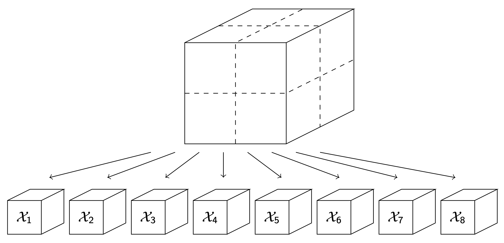

Interests

My current research is in tensor decompositions for both black-box approximations and the simulation of partial differential equations.
I focus primarily on implementations of memory-efficient decompositions in various tensor settings to make large-scale computation feasible. I also have
interest in the use of data-centric implementations that require little access into data sets in compressing information. Key words: Tensor-Train, Tucker,
Hierarchical Tucker, Cross approximations, parallel computing.
Publications and Pre-prints
- N. Zheng, W. Sands, D. Hayes, A. Christlieb, J-M. Qiu, "A Semi-Lagrangian Adaptive Rank (SLAR) Method for High-Dimensional Vlasov Dynamics", In Preparation
- W. Sands, J-M. Qiu, D. Hayes, N. Zheng, "An Adaptive-rank Approach with Greedy Sampling for Multi-scale BGK Equations", In Review, 2025
- N. Zheng, D. Hayes, A. Christlieb, J-M. Qiu, "A Semi-Lagrangian Adaptive-Rank (SLAR) Method for Linear Advection and Nonlinear Vlasov-Poisson System", Journal of Computational Physics,(532), Paper No. 113970, 2025
- C. Bacuta, C. Bacuta, D. Hayes, "Comparison of variational discretizations for a convection-diffusion problem", Rev. Roumaine Math. Pures Appl., (69), 327-351, 2024
- T. Shi, D. Hayes, J-M. Qiu, "Distributed memory parallel adaptive tensor-train cross approximation", In Review, 2024
- C. Bacuta, D. Hayes, and T. O'Grady, "Saddle Point Least Squares Discretization for Convection-Diffusion", Applicable Analysis, (103), 2241-2268,2024
- D. Hayes, "Saddle Point Least Squares and Petrov-Galerkin methods applied to Reaction-Diffusion and Convection-Diffusion Equations", University of Delaware, 2023
- C. Bacuta, D. Hayes, and J. Jacavage, "Efficient discretization and preconditioning of the singularly perturbed reaction-diffusion problem", Computers and Mathematics with Applications, (109), 270-279, 2022
- C. Bacuta, D. Hayes, and J. Jacavage, "Notes on a saddle point reformulation of mixed variational problems", Computers and Mathematics with Applications, (95), 4-18, 2021